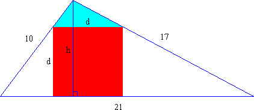
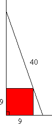

Solution to puzzle 76: Square inscribed in a triangle
 A triangle has sides 10, 17, and 21. A square is inscribed in the triangle. One side of the square lies on the longest side of the triangle. The other two vertices of the square touch the two shorter sides of the triangle. What is the length of the side of the square?
A triangle has sides 10, 17, and 21. A square is inscribed in the triangle. One side of the square lies on the longest side of the triangle. The other two vertices of the square touch the two shorter sides of the triangle. What is the length of the side of the square?
By Heron's Formula, the area, A, of a triangle with sides a, b, c is given by A = , where s = (a+b+c)/2 is the semi-perimeter of the triangle.
Then s = (10+17+21)/2 = 24, and A = 84.
Now drop a perpendicular of length h onto the side of length 21.
We also have A = ½ × base × perpendicular height.
Hence A = 21h/2 = 84, from which h = 8.
Notice that the triangle above the square is similar to the whole triangle. (This follows because its base, the top of the square, is parallel to the base of the whole triangle.)
Let the square have side of length d.
Considering the ratio of altitude to base in each triangle, we have 8/21 = (8 - d)/d = 8/d - 1.
Therefore the length of the side of the square is 168/29.
Remarks
Using the above approach, it follows that 1/d = 1/c + 1/h, where c is the length of the side on which the square lies, and h is the altitude of the triangle.
(Note that the square will lie inside the triangle, in the configuration shown above, if the side on which it sits lies between two acute angles.)
Ladder puzzle 
Here is a similar looking puzzle which is, however, slightly trickier.
A 40 meter ladder leaning against a building rests upon the ground and just touches a 9 × 9 × 9 meter annex, which is flush against the wall. The building is perpendicular to the ground.
Assuming the ladder is inclined at more than 45° to the horizontal, what is the height above the ground at which the ladder touches the building?
Hint - Answer - Solution
Further reading
- [Java] Construction of inscribed square
- Calabi's Triangle -- Outline of Calabi's Construction and Proof, and diagram
Source: Original; inspired by the Maximum Square on mathschallenge.net